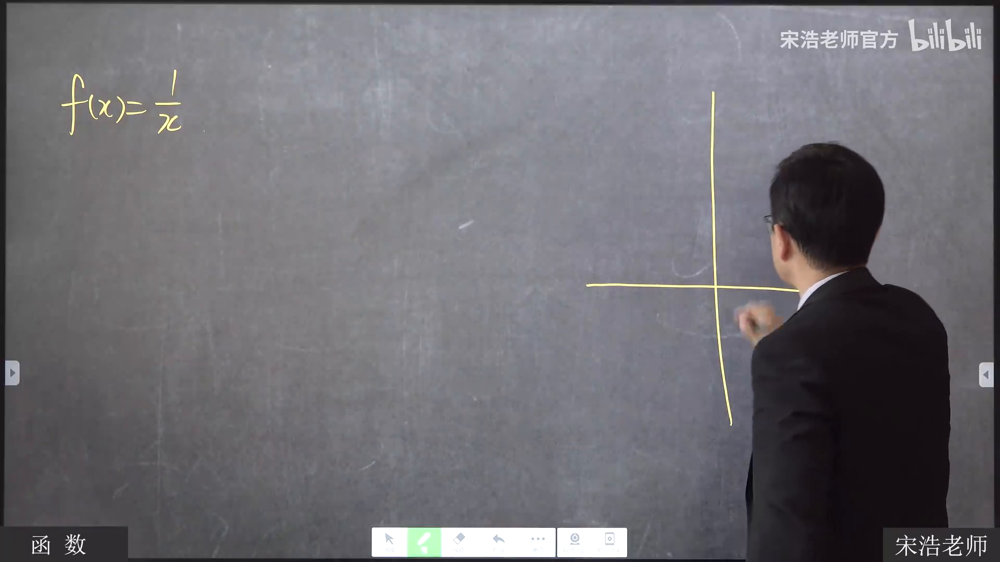
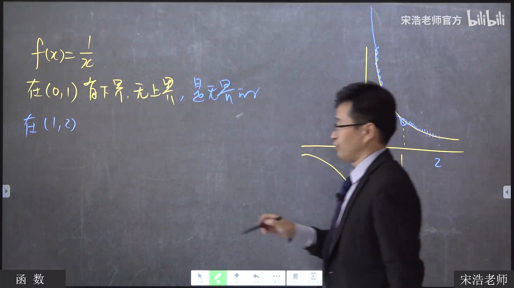
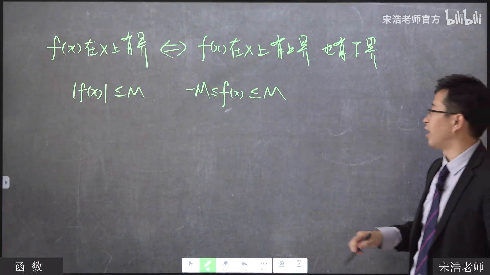
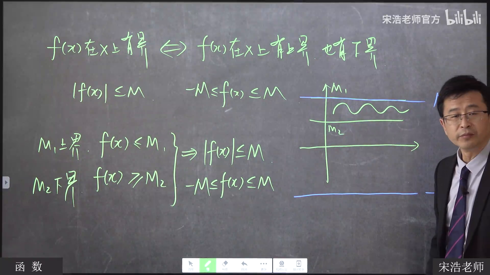
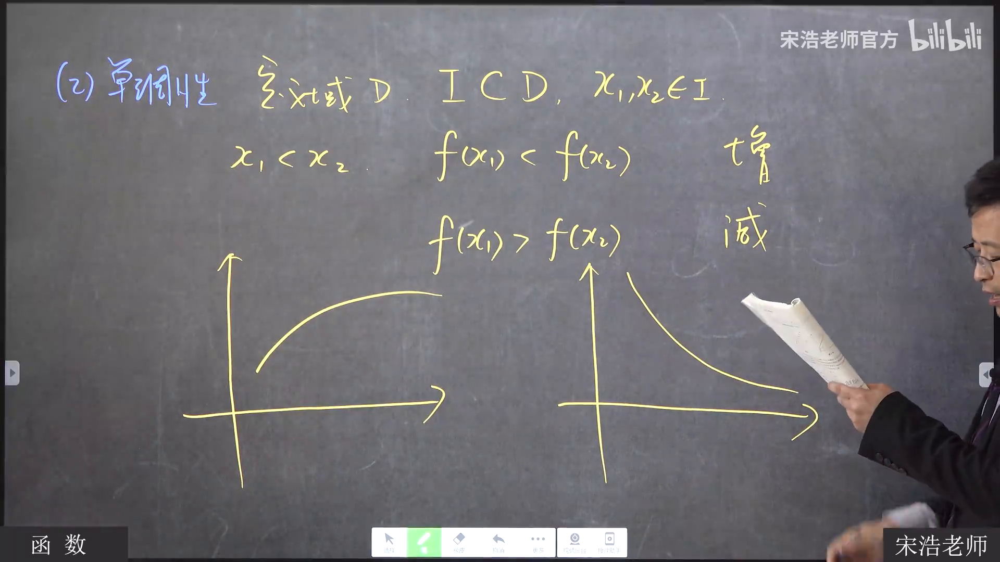
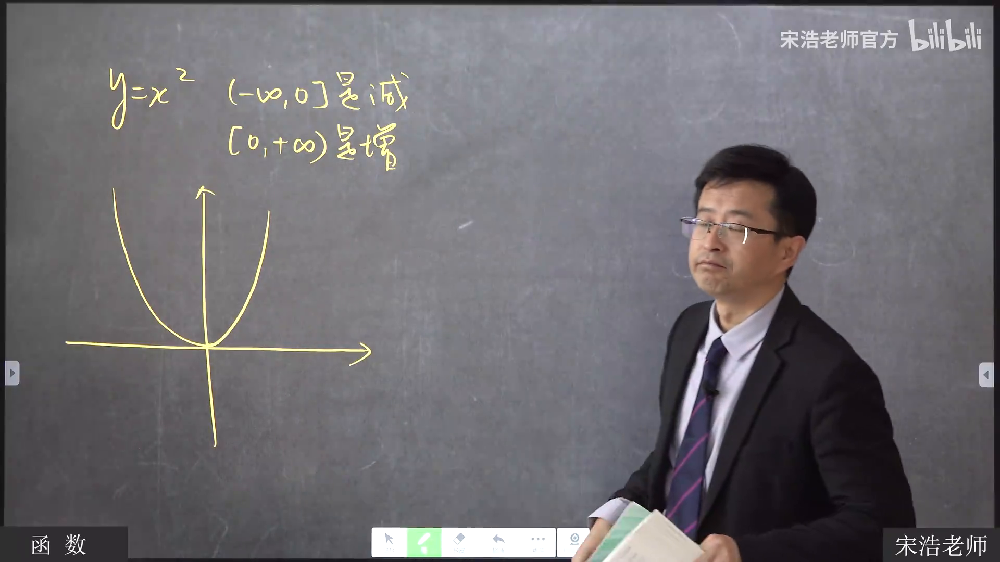
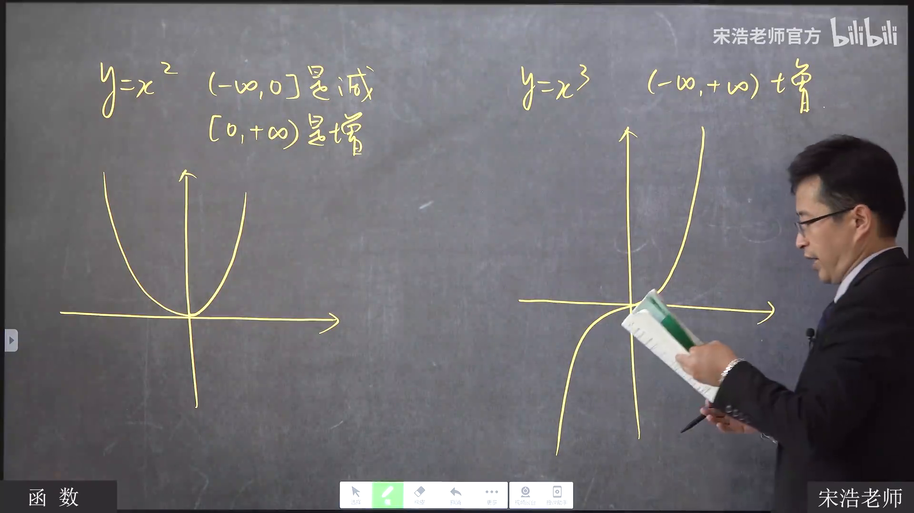
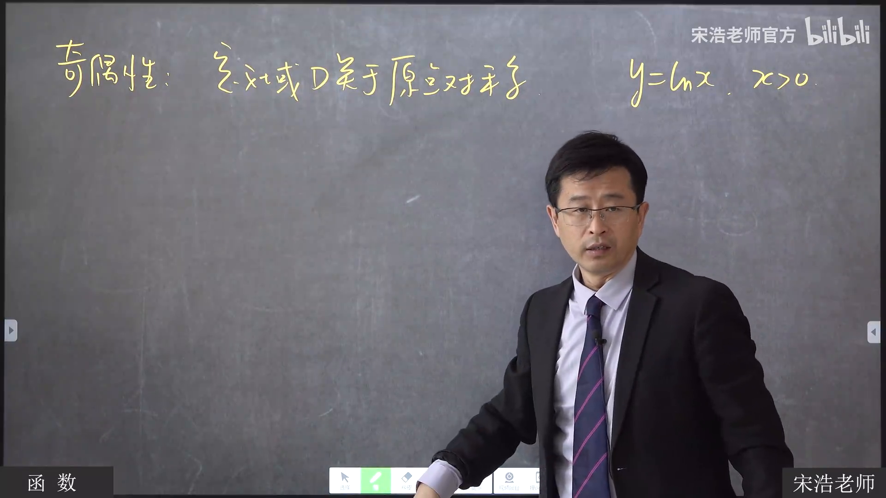
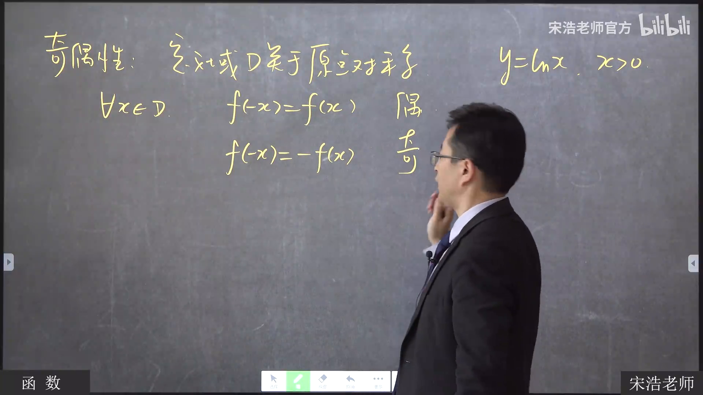
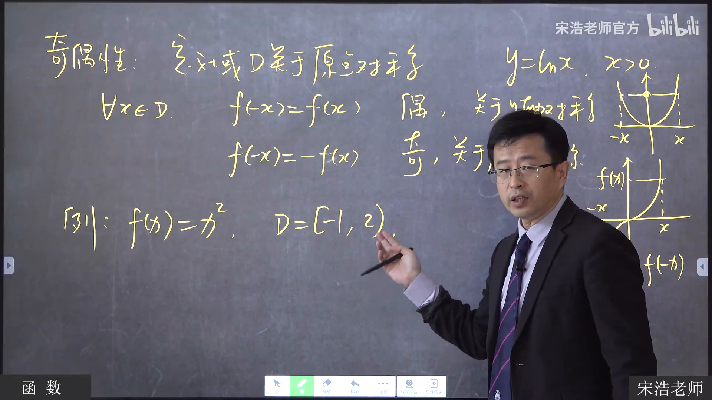

函数的有界性、单调性与奇偶性
宋浩《高等数学》2.0，第 3 集 · 20:00–35:00 试读版
打开原视频
这段课从有界性的例子讲到单调性，再用定义域说明判断奇偶性时容易忽略的条件。20:00 时上一个“无界”例子的板书尚在，因此本篇从随后写出的 $f(x)=1/x$ 开始。
一、同一个函数，在不同区间上可能有不同的有界性
老师先写下
$$ f(x)=\frac{1}{x}. $$

20:25 · 回到原视频
在 $(0,1)$ 上，它有下界、没有上界；换到 $(1,2)$，它既有上界，也有下界。画面中的曲线相同，变的是所考察的区间。

21:55 · 回到原视频
随后，老师把“有界”与“同时有上界、下界”连起来。绝对值界可以写成双边不等式：
$$ |f(x)|\le M\quad\Longleftrightarrow\quad -M\le f(x)\le M. $$

23:15 · 回到原视频
反过来，课堂先设 $M_1$ 是上界、$M_2$ 是下界，再画出包住函数图像的两条水平线。板书呈现了 $f(x)\le M_1$、$f(x)\ge M_2$ 与最终的 $|f(x)|\le M$；但没有明确写出统一的 $M$ 如何选取。本篇保留这一步的画面，不替老师补一条未写出的公式。

25:10 · 回到原视频
二、单调性要连同区间一起说
设 $I\subset D$，在 $I$ 中取 $x_1<x_2$。老师用函数值的先后关系区分增、减：
$$ \begin{aligned} f(x_1)<f(x_2)&\quad\text{对应递增},\\ f(x_1)>f(x_2)&\quad\text{对应递减}. \end{aligned} $$

27:45 · 回到原视频
第一个例子是 $y=x^2$。板书分别把两侧写为
$$ (-\infty,0]\text{ 上递减},\qquad [0,+\infty)\text{ 上递增}. $$

28:30 · 回到原视频
两个区间都写了端点 $0$。老师随后用“体重先减后增的转折日”作类比，说明转折点可以同时归入两段；讨论的是各个区间内的变化方向。
接着是 $y=x^3$。它的图像一路上升，老师把递增范围写为 $(-\infty,+\infty)$，与需要分段的 $x^2$ 对照。

30:55 · 回到原视频
三、判断奇偶性，先看定义域
老师先写出一个不能直接套奇偶性等式的例子：
$$ y=\ln x,\qquad x>0. $$
它的定义域不关于原点对称，因此课堂将它判为非奇非偶。只盯着解析式、跳过定义域，会在这一步出错。

31:45 · 回到原视频
在定义域 $D$ 关于原点对称的前提下，板书给出两种关系：
$$ \begin{aligned} f(-x)&=f(x) &&\text{偶函数},\\ f(-x)&=-f(x) &&\text{奇函数}. \end{aligned} $$

32:30 · 回到原视频
最后，老师故意把熟悉的 $x^2$ 限制到一个不对称的定义域：
$$ f(x)=x^2,\qquad D=[-1,2). $$
这时定义域不关于原点对称，课堂结论是非奇非偶。同一个解析式换了定义域，奇偶性判断也会改变。

34:40 · 回到原视频
本篇只覆盖 20:00–35:00，依据该段板书和附近字幕人工校准；它是公式识别方案的试读成品，不代表一键视觉模型已经完成自动识别。查看试验记录。